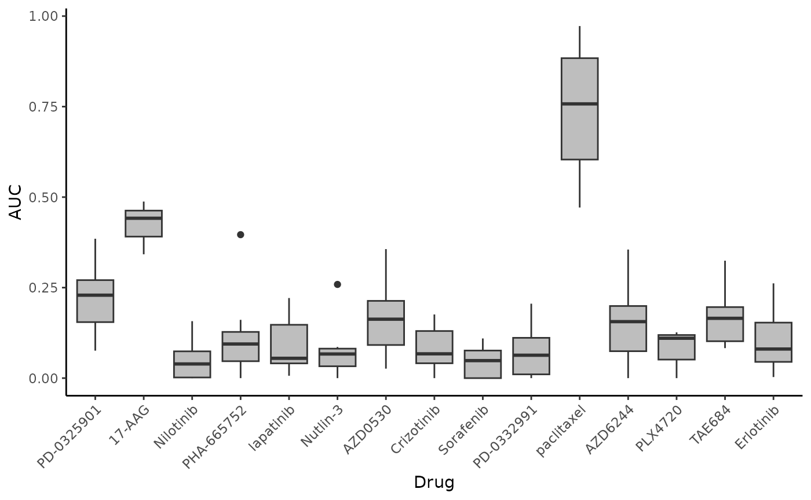
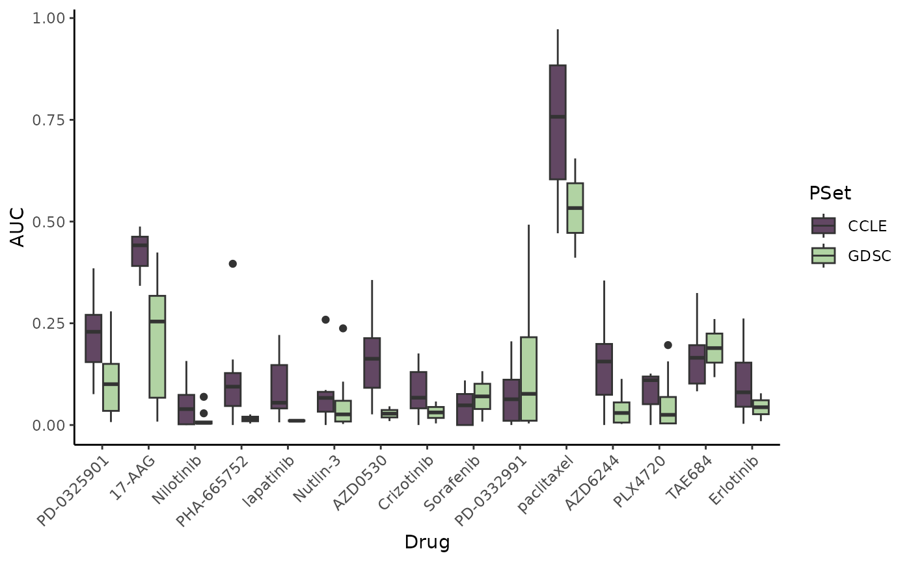
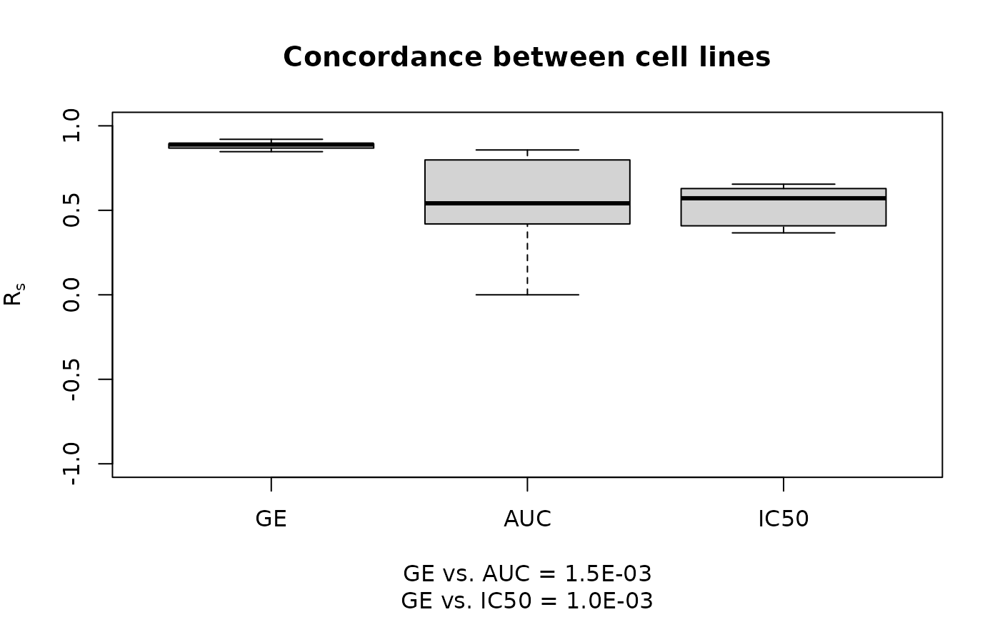
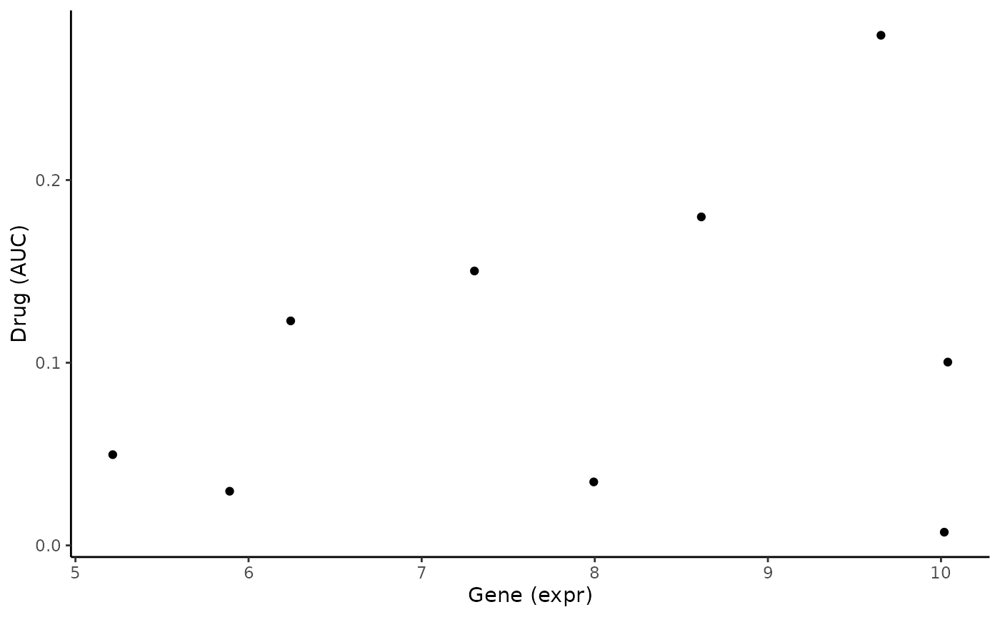

Module 3: Pharmacogenomics for biomarker discovery – Basic analysis
Jermiah J. Joseph
Princess Margaret Cancer Centrejermiah.joseph@uhn.ca
Nikta Feizi
Princess Margaret Cancer Centrenikta.feizi@uhn.ca
Julia Nguyen
Princess Margaret Cancer Centrejulia.nguyen@uhn.ca
18 October 2024
Source:vignettes/Module3.Rmd
Module3.RmdLab 3 Overview
Instructor(s) name(s) and contact information
- Jermiah J. Joseph jermiah.joseph@uhn.ca
- Nikta Feizi <>
- Julia Nguyen julia.nguyen@uhn.ca
PharmacoGx Package Overview
PharmacoGx: An R package for analyzing pharmacogenomic datasets.
Key Functions:
-
Install and Load PharmacoGx
install.packages("BiocManager") BiocManager::install("PharmacoGx") library(PharmacoGx) -
Download a PharmacoSet
availablePSets() GDSC <- downloadPSet("GDSC_2020(v2-8.2)") # downloadPSet(): Download pharmacogenomic datasets. -
Extract Drug Response Data
drug_response <- summarizeSensitivityProfiles(GDSC, sensitivity.measure='aac_recomputed') # summarizeSensitivityProfiles(): Summarize drug response data. -
Extract Gene Expression Data
gene_expr <- summarizeMolecularProfiles(GDSC, mDataType='rna') gene_expr_mtx <- assay(gene_expr)
Data Retrieval:
availablePSets(): Lists available pharmacogenomic datasets.
-
Downloading Multiple PharmacoSets:
-
Accessing Molecular Profiles:
molecular.data <- lapply(PSet.list, function(pset) { summarizeMolecularProfiles(pset, mDataType = 'rna') })
Introduction
In this workshop, we will explore data integration and comparative analysis using the PharmacoGx package, focusing on the GDSC and CCLE datasets. Specifically, we will cover drug sensitivity comparisons using AUC and IC50 measures and investigate correlations between gene expression profiles. This R Markdown file is designed to give participants hands-on experience with data exploration and interpretation.
Exploring GDSC and CCLE Datasets
Load GDSC and CCLE Datasets
We will use the GDSCsmall and CCLEsmall sample datasets provided by PharmacoGx to compare the two data sources.
## <PharmacoSet>
## Name: GDSC
## Date Created: Mon Aug 24 15:18:23 2015
## Number of samples: 10
## Molecular profiles:
## RNA :
## Dim: 300, 11
## rna2 :
## Dim: 300, 9
## mutation :
## Dim: 70, 10
## Treatment response: Drug pertubation:
## Please look at pertNumber(cSet) to determine number of experiments for each drug-sample combination.
## Drug sensitivity:
## Number of Experiments: 972
## Please look at sensNumber(cSet) to determine number of experiments for each drug-sample combination.Find Common Genes Between GDSC and CCLE
The first step in comparing datasets is to find shared features between them. Here, we identify the genes that are present in both datasets.
## [1] 41There are 41 genes that are common between the RNA profiles of the GDSC and CCLE datasets.
Identify Common Cell Lines and Drugs
Next, we identify the common cell lines and drugs between GDSC and CCLE.
common <- intersectPSet(
list("CCLE" = CCLEsmall, "GDSC" = GDSCsmall),
intersectOn = c("cell.lines", "drugs"),
strictIntersect = TRUE
)## Intersecting large PSets may take a long time ...
cellNames(common[[1]])## [1] "22RV1" "23132-87" "5637" "639-V" "647-V" "697" "769-P"
## [8] "786-0" "8-MG-BA"## [1] 9There are 9 common samples between GDSC and CCLE. The
intersectPSet function returns a list of the two PSets
subsetted to include only the common cell lines.
common## $CCLE
## <PharmacoSet>
## Name: CCLE
## Date Created: Fri Nov 6 14:00:53 2015
## Number of samples: 9
## Molecular profiles:
## RNA :
## Dim: 50, 9
## RNAseq :
## Dim: 50, 9
## mutation :
## Dim: 1667, 9
## CNV :
## Dim: 50, 7
## Treatment response: Drug pertubation:
## Please look at pertNumber(cSet) to determine number of experiments for each drug-sample combination.
## Drug sensitivity:
## Number of Experiments: 102
## Please look at sensNumber(cSet) to determine number of experiments for each drug-sample combination.
##
## $GDSC
## <PharmacoSet>
## Name: GDSC
## Date Created: Mon Aug 24 15:18:23 2015
## Number of samples: 9
## Molecular profiles:
## RNA :
## Dim: 300, 10
## rna2 :
## Dim: 300, 9
## mutation :
## Dim: 70, 9
## Treatment response: Drug pertubation:
## Please look at pertNumber(cSet) to determine number of experiments for each drug-sample combination.
## Drug sensitivity:
## Number of Experiments: 79
## Please look at sensNumber(cSet) to determine number of experiments for each drug-sample combination.Notice that most of the molecular profiles are subsetted to include the 9 common samples. Some odd cases include RNA from GDSC which has a technical replicate (hence 10 samples) and CNV from CCLE which is missing CNV profiles for two of the nine cell lines.
Summarize Drug Sensitivity Profiles
We summarize drug sensitivity profiles (AUC and IC50) for each
dataset. The summary.stat parameter can be set to different
statistical metrics such as mean, median, etc.
Here, we use the median for summarizing the
sensitivity.
# Summary statistics for AUC
GDSC.auc <- summarizeSensitivityProfiles(
common$GDSC,
sensitivity.measure = "auc_published",
summary.stat = "median",
verbose = FALSE
)
CCLE.auc <- summarizeSensitivityProfiles(
common$CCLE,
sensitivity.measure = "auc_published",
summary.stat = "median",
verbose = FALSE
)
# Summary statistics for IC50
GDSC.ic50 <- summarizeSensitivityProfiles(
common$GDSC,
sensitivity.measure = "ic50_published",
summary.stat = "median",
verbose = FALSE
)
CCLE.ic50 <- summarizeSensitivityProfiles(
common$CCLE,
sensitivity.measure = "ic50_published",
summary.stat = "median",
verbose = FALSE
)
CCLE.auc |> head()## 22RV1 23132-87 5637 639-V 647-V 697 769-P
## PD-0325901 0.385000 NA 0.1708125 0.3088750 NA 0.2291000 0.23250000
## 17-AAG 0.372460 NA 0.4828250 0.4877500 NA 0.3420875 0.40937500
## Nilotinib 0.000000 NA 0.0072625 0.0710125 NA 0.1573375 0.00000000
## PHA-665752 0.094375 NA 0.0000000 0.0194000 NA 0.1609750 0.09427143
## lapatinib 0.036125 NA 0.2212250 0.0066000 NA 0.0453250 0.16475000
## Nutlin-3 0.076925 NA 0.0000000 0.0666625 NA 0.2588125 0.08598571
## 786-0 8-MG-BA
## PD-0325901 0.13862500 0.0758750
## 17-AAG 0.44162500 0.4426500
## Nilotinib 0.07501250 NA
## PHA-665752 0.07408625 0.3962500
## lapatinib 0.12987500 0.0547625
## Nutlin-3 0.00000000 0.0655125We can visualize the distribution of drug sensitivity profiles to compare between the two psets.
First we quickly reformat the data into a long format to facilitate
plotting. We use the melt() function from the
reshape2 package.
CCLE_toPlot <- melt(CCLE.auc)
colnames(CCLE_toPlot) <- c("Drug", "Gene", "AUC")
CCLE_toPlot |> head()## Drug Gene AUC
## 1 PD-0325901 22RV1 0.385000
## 2 17-AAG 22RV1 0.372460
## 3 Nilotinib 22RV1 0.000000
## 4 PHA-665752 22RV1 0.094375
## 5 lapatinib 22RV1 0.036125
## 6 Nutlin-3 22RV1 0.076925Next, we can create a quick box plot to visualize the AUC distributions per drug.
ggplot(CCLE_toPlot, aes(x = Drug, y = AUC)) + geom_boxplot(fill = "grey") +
theme_classic() + theme(axis.text.x = element_text(angle = 45, hjust = 1)) #rotate x-axis labels## Warning: Removed 33 rows containing non-finite outside the scale range
## (`stat_boxplot()`).
Let’s do this again but with the GDSC PSet so we can compare the two
# format the CCLE sensitivity data
GDSC_toPlot <- melt(GDSC.auc)
colnames(GDSC_toPlot) <- c("Drug", "Gene", "AUC")
# merge the two pset dataframes
GDSC_toPlot$PSet <- "GDSC"
CCLE_toPlot$PSet <- "CCLE"
merge_toPlot <- rbind(GDSC_toPlot, CCLE_toPlot)
# plot to compare AUC distribution between PSets
ggplot(merge_toPlot, aes(x = Drug, y = AUC)) + geom_boxplot(aes(fill = PSet)) +
scale_fill_manual(values = c("#624763", "#B1D3A3")) + theme_classic() +
theme(axis.text.x = element_text(angle = 45, hjust = 1)) #rotate x-axis labels## Warning: Removed 89 rows containing non-finite outside the scale range
## (`stat_boxplot()`).
Preclinical drug response data is fairly noisy, hence the variation we see between the two datasets. However, we do see some commonalities in distribution.
Summarize Gene Expression Profiles
We summarize gene expression data for the genes that are common between GDSC and CCLE.
GDSCexpression <- summarizeMolecularProfiles(
common$GDSC, cellNames(common$GDSC),
mDataType = "rna", features = commonGenes, verbose = FALSE
) |> assay()
CCLEexpression <- summarizeMolecularProfiles(
common$CCLE, cellNames(common$CCLE),
mDataType = "rna", features = commonGenes, verbose = FALSE
) |> assay()
GDSCexpression |> head()## 22RV1 23132-87 5637 639-V 647-V 697
## ENSG00000000003 5.890740 6.243345 10.018953 9.653157 10.039302 5.215355
## ENSG00000000005 4.448758 4.335738 4.108065 4.014940 4.250878 4.367339
## ENSG00000000419 10.427302 11.045576 11.611295 11.604278 11.248686 10.572231
## ENSG00000000457 5.905884 6.900556 5.684007 5.392485 5.748209 5.934834
## ENSG00000000460 6.010605 5.433439 5.729120 5.439058 6.453635 6.342021
## ENSG00000000938 4.410785 4.329849 4.397001 4.176387 4.275824 4.618786
## 769-P 786-0 8-MG-BA
## ENSG00000000003 8.615450 7.304893 7.994002
## ENSG00000000005 4.722970 4.235424 4.447925
## ENSG00000000419 9.927782 10.825907 10.759706
## ENSG00000000457 6.475836 5.087249 4.994176
## ENSG00000000460 5.999142 5.001772 6.073944
## ENSG00000000938 5.003250 4.443563 4.797094Here, you could do PCA on the profiles to quickly check the data. We will skip this step in the interest of time.
Correlation Analysis Between GDSC and CCLE
We perform correlation analysis to examine the relationship between gene expression, AUC, and IC50 measures across the GDSC and CCLE datasets using Spearman’s correlation.
# get common cell line names
cc <- cellNames(common[[1]])
# correlation of gene expression across common cell lines
ge.cor <- sapply(cc, function(x, d1, d2) {
stats::cor(
d1[, x], d2[, x],
method = "spearman", use = "pairwise.complete.obs"
)
}, d1 = GDSCexpression, d2 = CCLEexpression)
ge.cor## 22RV1 23132-87 5637 639-V 647-V 697 769-P 786-0
## 0.8658537 0.8844948 0.8935540 0.9202091 0.9106272 0.8893728 0.8939024 0.8681185
## 8-MG-BA
## 0.8470383We can see that the RNA-Seq expression values are highly correlated across the common cell lines.
Let’s take a look at the correlation of drug response, starting with IC50 values.
# quick look at the CCLE IC50 data
CCLE.ic50 |> head()## 22RV1 23132-87 5637 639-V 647-V 697 769-P
## PD-0325901 8.0000000 NA 8.00000000 8.0000000 NA 8.0000000 1.4542717
## 17-AAG 0.3297017 NA 0.07082279 0.1500945 NA 0.4225712 0.1517988
## Nilotinib 8.0000000 NA 7.47535467 8.0000000 NA 1.9104344 8.0000000
## PHA-665752 8.0000000 NA 8.00000000 8.0000000 NA 3.2754419 7.1504111
## lapatinib 7.8473053 NA 2.30776763 8.0000000 NA 0.8494762 1.0574611
## Nutlin-3 8.0000000 NA 8.00000000 8.0000000 NA 1.8905237 5.5913019
## 786-0 8-MG-BA
## PD-0325901 8.0000000 8.0000000
## 17-AAG 0.2795302 0.2349526
## Nilotinib 8.0000000 NA
## PHA-665752 8.0000000 8.0000000
## lapatinib 7.1780353 5.2266199
## Nutlin-3 8.0000000 8.0000000
# correlation of IC50 values across common drugs and cell lines
ic50.cor <- sapply(cc, function(x, d1, d2) {
stats::cor(
d1[, x], d2[, x],
method = "spearman", use = "pairwise.complete.obs"
)
}, d1 = GDSC.ic50, d2 = CCLE.ic50)
ic50.cor## 22RV1 23132-87 5637 639-V 647-V 697 769-P 786-0
## 0.4082483 NA 0.5713800 0.4082483 NA 0.6273461 0.6300619 0.6546537
## 8-MG-BA
## 0.3664850Notice that we have some NA values in the original CCLE
IC50 dataset and in the correlation results.
The pairwise.complete.obs argument used in the
cor() function ensures that only complete observations
(i.e. numeric values that are not NA) are included in the
pairwise correlations.
Since 23132-87 and 647-V are all
NA values, no spearman correlation was computed.
We can quickly compute the correlation for AUC as well.
# correlation of AUC values across common drugs and cell lines
auc.cor <- sapply(cc, function(x, d1, d2) {
stats::cor(
d1[, x], d2[, x],
method = "spearman", use = "pairwise.complete.obs"
)
}, d1 = GDSC.auc, d2 = CCLE.auc)
auc.cor## 22RV1 23132-87 5637 639-V 647-V 697 769-P 786-0
## 0.0000000 NA 0.7748062 0.8214286 NA 0.3750000 0.8571429 0.4638168
## 8-MG-BA
## 0.5414447Statistical Comparison
We compare the correlations using Wilcoxon signed-rank tests to see if there are significant differences between the gene expression correlations and the drug sensitivity correlations.
w1 <- stats::wilcox.test(
x = ge.cor, y = auc.cor, conf.int = TRUE, exact = FALSE
)
w2 <- stats::wilcox.test(
x = ge.cor, y = ic50.cor, conf.int = TRUE, exact = FALSE
)
w1##
## Wilcoxon rank sum test with continuity correction
##
## data: ge.cor and auc.cor
## W = 62, p-value = 0.001496
## alternative hypothesis: true location shift is not equal to 0
## 95 percent confidence interval:
## 0.06309566 0.51857816
## sample estimates:
## difference in location
## 0.347967
w2##
## Wilcoxon rank sum test with continuity correction
##
## data: ge.cor and ic50.cor
## W = 63, p-value = 0.001024
## alternative hypothesis: true location shift is not equal to 0
## 95 percent confidence interval:
## 0.2407670 0.4857055
## sample estimates:
## difference in location
## 0.3179657
# Display p-values
ss <- sprintf("GE vs. AUC = %.1E\nGE vs. IC50 = %.1E", w1$p.value, w2$p.value)
cat(ss)## GE vs. AUC = 1.5E-03
## GE vs. IC50 = 1.0E-03Boxplot Visualization
The results are visualized using boxplots to compare the correlations across gene expression, AUC, and IC50.
boxplot(list("GE" = ge.cor, "AUC" = auc.cor, "IC50" = ic50.cor),
main = "Concordance between cell lines",
ylab = expression(R[s]),
sub = ss,
ylim = c(-1, 1),
col = "lightgrey",
pch = 20,
border = "black"
)
Statistical Analysis for Drug Response Associations
In this final section, we will be focusing on computing the association between a feature of interest and drug response in order to identify predictive biomarkers.
Let’s begin by selecting a feature and drug of interest to explore.
commonGenes |> head()## [1] "ENSG00000000003" "ENSG00000000005" "ENSG00000000419" "ENSG00000000457"
## [5] "ENSG00000000460" "ENSG00000000938"
feature <- "ENSG00000000003"
common$GDSC@treatment |> rownames()## [1] "PD-0325901" "17-AAG" "Nilotinib" "PHA-665752" "lapatinib"
## [6] "Nutlin-3" "AZD0530" "Crizotinib" "Sorafenib" "PD-0332991"
## [11] "paclitaxel" "AZD6244" "PLX4720" "TAE684" "Erlotinib"
drug <- "PD-0325901"Next, we need to extract the vector of gene expression for our chosen feature and drug response for our chosen drug. Let’s do this for the GDSC dataset.
Gene <- GDSCexpression[feature,]
Drug <- GDSC.auc[drug,]
Gene## 22RV1 23132-87 5637 639-V 647-V 697 769-P 786-0
## 5.890740 6.243345 10.018953 9.653157 10.039302 5.215355 8.615450 7.304893
## 8-MG-BA
## 7.994002
Drug## 22RV1 23132-87 5637 639-V 647-V 697 769-P 786-0
## 0.029649 0.122911 0.007242 0.279261 0.100351 0.049681 0.179831 0.150231
## 8-MG-BA
## 0.034754Notice that the PSet has already kept the samples ordered across the various profiles.
Before we compute the associations, we can quickly plot the two variables to visualize their relationship.
# create datafarme to plot
toPlot <- data.frame(Gene = Gene, Drug = Drug)
ggplot(toPlot, aes(x = Gene, y = Drug)) + geom_point() +
theme_classic() + labs(x = "Gene (expr)", y = "Drug (AUC)")
From the scatter plot, we see a weak positive correlation. Let’s see if this is reflected in our association analyses.
Concordance Index
Fist, we will compute the association between the gene expression
data and drug response. We will use the concordance.index
function from the survcomp package.
ci <- survcomp::concordance.index(
as.numeric(Drug), # drug vector
surv.time = as.numeric(Gene), # gene vector
surv.event = rep(1,length(Gene)),
outx = TRUE, method="noether", na.rm = TRUE
)
cat("Concordance Index:", ci$c.index, "\n",
"P-value:", ci$p.value, "\n",
"Standard Error:", ci$se, "\n",
"Upper CI:", ci$upper,"\n",
"Lower CI:", ci$lower)## Concordance Index: 0.4166667
## P-value: 0.07592696
## Standard Error: 0.04695301
## Upper CI: 0.5086929
## Lower CI: 0.3246404The concordance index tells us there is a weak inverse association between the gene expression and the drug response.
Pearson’s Correlation Coefficient
Using the same feature and drug, let’s compute the association again but this time using Pearson’s correlation.
ps <- cor.test(
x = Gene,
y = Drug,
alternative = "two.sided",
method = "pearson"
)
cat("Pearson's correlation:", ps$estimate, "\n",
"P-value:", ci$p.value, "\n",
"Confidence Interval:", ps$conf.int)## Pearson's correlation: 0.2937677
## P-value: 0.07592696
## Confidence Interval: -0.4601228 0.8015157The Pearson’s correlation tells us there is a (very) weak positive linear relationship between the gene expression and the drug response.
Notice the slight difference in interpretation between the concordance index and the Pearson’s correlation.
Drug Sensitivity Signatures (PharmacoGx)
The last method we will explore is a built-in function from the
PharmacoGx package called drugSensitivitySig.
This function takes a PharmacoSet along with a list of
drugs and features, then computes the association between the feature
expression and drug response for each pair.
Let’s first select the first 3 genes and drugs as our features & drugs of interest:
features <- commonGenes[1:3]
drugs <- rownames(common$GDSC@treatment)[1:3]
features## [1] "ENSG00000000003" "ENSG00000000005" "ENSG00000000419"
drugs## [1] "PD-0325901" "17-AAG" "Nilotinib"Now we can calculate the drug sensitivity signature using the vector of genes and drugs for the GDSC dataset. Note that this gene-drug signature is based on univariable analysis.
# gene expression signature
sig.rna <- drugSensitivitySig(
object = GDSCsmall,
mDataType = "rna",
drugs = drugs,
features = features,
sensitivity.measure = "auc_published",
molecular.summary.stat = "median",
sensitivity.summary.stat = "median",
modeling.method = "pearson",
verbose = FALSE
)
sig.rna@.Data[,,c(1,5)]## , , estimate
##
## PD-0325901 17-AAG Nilotinib
## ENSG00000000003 -0.18840373 -0.2369481 0.8554590
## ENSG00000000005 -0.14409315 -0.4756331 0.7875267
## ENSG00000000419 -0.02890968 0.5466780 -0.8239237
##
## , , pvalue
##
## PD-0325901 17-AAG Nilotinib
## ENSG00000000003 0.8793373 0.8477058 0.3465502
## ENSG00000000005 0.9079470 0.6844380 0.4227225
## ENSG00000000419 0.9815930 0.6317843 0.3835609The output is a 3D array of genes x drugs x metric. Outputted are the
estimate and pvalue. Feel free to explore the
other array components in sig.rna@.Data.
This function is a powerful method for investigating the univariate relationship between multiple molecular features and drugs.
Let’s do the same for mutations, we’ll do a quick example using one gene and drug from the CCLE dataset.
# mutation signature
sig.mut <- drugSensitivitySig(
object = CCLEsmall,
mDataType = "mutation",
drugs = "PD-0325901",
features = "BRAF",
sensitivity.measure = "auc_published",
molecular.summary.stat = "and",
sensitivity.summary.stat = "median",
verbose = FALSE
)
sig.mut@.Data[,,c(1,6)]## estimate pvalue
## 8.251857e-01 1.612881e-09Univariate vs Multivariate Analysis
For the final section of this lab, we will explore univariate vs multivariate linear modeling. Let’s start with a simple univariate linear model using the same Gene and Drug vector from earlier.
Univariate Analysis
Recall Gene is the RNA expression vector of
ENSG00000000005 and Drug is the drug response
vector (AUC) for PD-0325901 in the GDSC dataset.
##
## Call:
## lm(formula = Drug ~ Gene)
##
## Residuals:
## Min 1Q Median 3Q Max
## -0.12867 -0.04835 -0.01884 0.05239 0.14848
##
## Coefficients:
## Estimate Std. Error t value Pr(>|t|)
## (Intercept) -0.004639 0.139300 -0.033 0.974
## Gene 0.014028 0.017253 0.813 0.443
##
## Residual standard error: 0.08965 on 7 degrees of freedom
## Multiple R-squared: 0.0863, Adjusted R-squared: -0.04423
## F-statistic: 0.6612 on 1 and 7 DF, p-value: 0.4429Let’s break down this output:
Residuals: the difference between the predicted y (drug response) values and the actual y values. A larger range suggests the model may not be a good fit of the data.
Coefficients: the parameters of the model. -
Estimate can be considered the effect size. Specifically,
it is the one-unit change in the y variable (drug response) per one-unit
change in the x variable (gene expression). The estimate from our
drug~gene association is 0.014028. -
Pr(>|t|) is the corresponding p-value for each estimate.
The p-value from our drug~gene association test is
0.443.
Note: If any of the coefficients had met the p-value < 0.05
significance threshold, you would have seen * beside the
estimate (unfortunately, this association does not meet this
threshold).
Let’s see if we can make a multi-variate model with better performance.
# get another gene vector
commonGenes[2]## [1] "ENSG00000000005"##
## Call:
## lm(formula = Drug ~ Gene + Gene2)
##
## Residuals:
## Min 1Q Median 3Q Max
## -0.13292 -0.04715 -0.02147 0.04840 0.14047
##
## Coefficients:
## Estimate Std. Error t value Pr(>|t|)
## (Intercept) 0.15618 0.84445 0.185 0.859
## Gene 0.01251 0.02017 0.620 0.558
## Gene2 -0.03441 0.17780 -0.194 0.853
##
## Residual standard error: 0.09653 on 6 degrees of freedom
## Multiple R-squared: 0.09197, Adjusted R-squared: -0.2107
## F-statistic: 0.3038 on 2 and 6 DF, p-value: 0.7487The second gene feature we are adding to our model is
ENSG00000000005.
Take a look at the output, comparing it to the previous model we ran. Do you think that adding an additional gene has improved model performance?